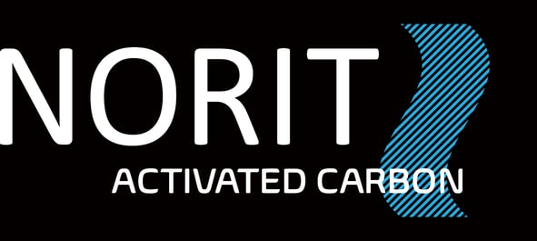

Sales Analytics Platform for a Chainsaw Manufacturer
Elinext built a sales data platform for a global manufacturer that needed dealer and market insight.
Read the case study
Proposal brief by ElinextA short software proposal for the moment when technical support, sales, R&D, and product teams need cleaner tools to answer customer cases with less manual work.
We saw the Application Support Specialist opening. The public role text points to customer-facing technical support for activated carbon uses, so this brief focuses on tools that help those experts move faster.
We would start with a dedicated squad under NORIT's product or support owner. The first phase is a six-week pilot with weekly demos and clear handoff notes.
One solution lead, two backend and data engineers, one frontend engineer, and one QA automation engineer.
Trace sales, R&D, product, and supply-chain handoffs for application questions and product issue resolution today.
Index brochures, product bulletins, SDS links, and case notes by grade, application, contaminant, and region.
Link CRM records, product data, and approved documents without replacing systems already used by teams.
Report repeated questions, blocked quotes, trial demand, and product gaps for Jeffrey's supply-chain planning meetings.
Elinext is a full-cycle software development company, active since 1997 across global delivery markets. We have about 700 in-house specialists, with no freelancers or subcontractors in client delivery. For NORIT, the fit is support tooling for sales, product, application, and supply teams. We bring Java, .NET, Python, React, SQL, QA automation, and data engineering skills. Our teams have served Siemens, Broadcom, Volkswagen, TRUMPF, and TUI on serious software programs. ISO 9001 and ISO 27001 help this squad join controlled support flows with less risk.
Elinext built a sales data platform for a global manufacturer that needed dealer and market insight.
Read the case study
Elinext supported ERP-linked warehouse services, bug fixing, barcode flows, and operational automation.
Read the case study